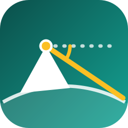

Biruni GISLast updated: 17 November 2026
Biruni GIS is a free, open-source desktop GIS for Windows, published by Hatem Tarek. This page explains what happens to your data when you use Biruni GIS, its phone pages, and its optional Google Drive link.
Biruni GIS works offline. Your projects and data are processed on your computer and are not sent to us. When the program checks for updates, it downloads a small signed file from this site, which is hosted on GitHub Pages; GitHub, as the host, can see your IP address, as with any web request.
When you scan a Biruni QR code, your phone opens a web page on this site. To reach your computer without a server of ours, the page and the program exchange short messages through public relays (Nostr relays and ntfy.sh) and use public STUN services (Google, Cloudflare) to open a direct connection. Every message is encrypted end to end with a key that only your phone and your computer hold; the relays see only unreadable data, its size and timing, and the IP addresses that connect to them. Photos and data then travel directly between your phone and your computer, or through a teammate's device, still encrypted.
If you choose to link a Google account, the phone page asks Google for the drive.file permission only. This lets Biruni GIS create files in your Drive and open only the files and folders it created or that you pick yourself. It cannot see the rest of your Drive.
Biruni GIS's use and transfer of information received from Google APIs adheres to the Google API Services User Data Policy, including the Limited Use requirements. Data from Google APIs is used only to provide the upload you asked for, is not used for advertising, is not transferred to anyone, and is not read by any person.
This site is static and hosted on GitHub Pages. It sets no cookies and has no analytics. The home page loads fonts from Google Fonts, which can see your IP address.
If this policy changes, the new version will be posted here with a new date. For questions, open an issue at github.com/HatemTarekGIS/biruni-gis/issues.
آخر تحديث: 17 نوفمبر 2026
Biruni GIS برنامج نظم معلومات جغرافية مجاني ومفتوح المصدر لويندوز، ينشره حاتم طارق. توضّح هذه الصفحة ما يحدث لبياناتك عند استخدام البرنامج وصفحات الموبايل والربط الاختياري مع Google Drive.
يعمل البرنامج دون إنترنت، وتُعالَج مشاريعك وبياناتك على جهازك ولا تُرسل إلينا. عند البحث عن تحديثات يُنزّل البرنامج ملفاً صغيراً موقّعاً من هذا الموقع المستضاف على GitHub Pages، ويرى GitHub عنوان الـ IP كما في أي طلب على الإنترنت.
عند مسح رمز QR من بيروني يفتح الموبايل صفحة على هذا الموقع. وللوصول إلى جهازك دون سيرفر خاص بنا، تتبادل الصفحة والبرنامج رسائل قصيرة عبر مرحّلات عامة (Nostr وntfy.sh)، وتستعمل خدمات STUN العامة (Google وCloudflare) لفتح اتصال مباشر. كل رسالة مشفّرة من الطرف للطرف بمفتاح لا يملكه إلا موبايلك وجهازك، فلا يرى المرحّل إلا بيانات غير مقروءة وحجمها وتوقيتها وعناوين الـ IP المتصلة به. ثم تنتقل الصور والبيانات مباشرة بين موبايلك وجهازك، أو عبر جهاز زميل، وهي مشفّرة أيضاً.
إذا اخترت ربط حساب جوجل، تطلب صفحة الموبايل من جوجل صلاحية drive.file فقط. تسمح هذه الصلاحية لبيروني بإنشاء ملفات في الدرايف الخاص بك، وبفتح الملفات والمجلدات التي أنشأها هو أو التي تختارها أنت فقط، ولا يرى باقي الدرايف.
يلتزم استخدام Biruni GIS للمعلومات الواردة من واجهات جوجل البرمجية ونقلها بـسياسة بيانات مستخدمي خدمات Google API، بما في ذلك متطلبات الاستخدام المحدود. تُستعمل هذه البيانات فقط لتنفيذ الرفع الذي طلبته، ولا تُستعمل للإعلانات، ولا تُنقل لأي طرف، ولا يطّلع عليها أي شخص.
الموقع ثابت ومستضاف على GitHub Pages، ولا يضع ملفات تعريف ارتباط (كوكيز) ولا يستعمل أدوات إحصاء. تحمّل الصفحة الرئيسية الخطوط من Google Fonts، التي ترى عنوان الـ IP.
إذا تغيّرت هذه السياسة تُنشر النسخة الجديدة هنا بتاريخ جديد. للاستفسار افتح بلاغاً على github.com/HatemTarekGIS/biruni-gis/issues.